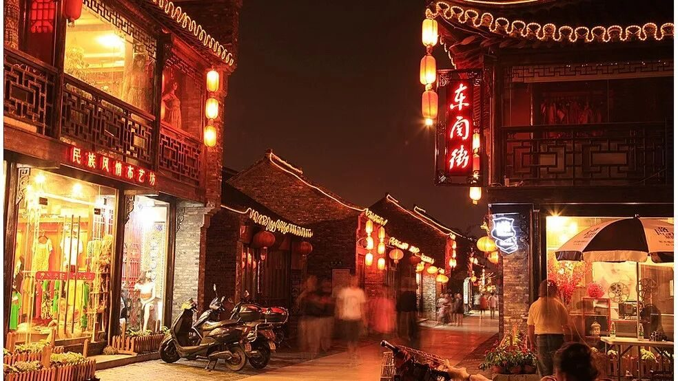
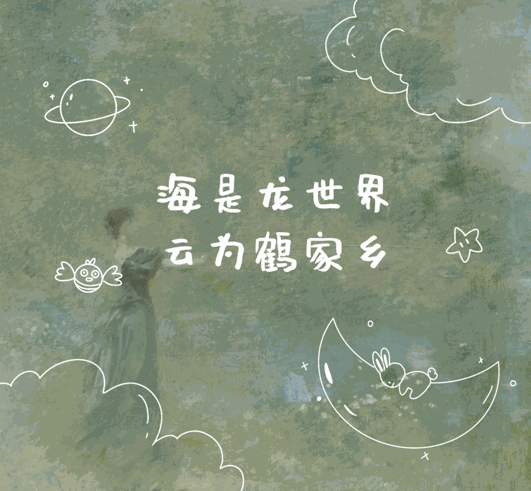
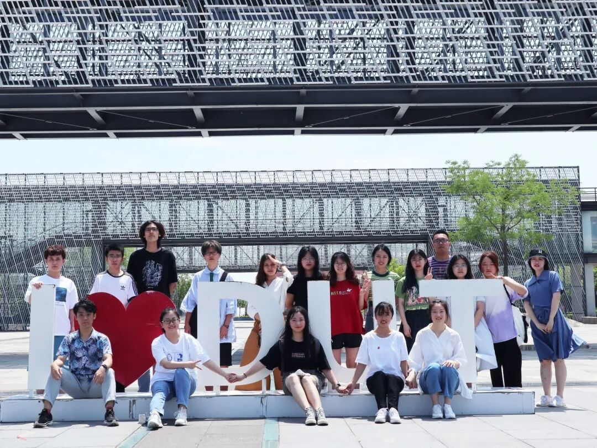
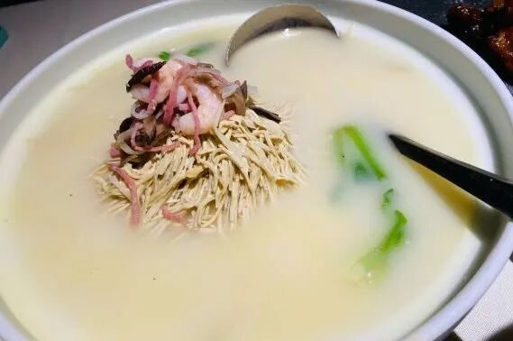

【徜扬恣肆·十四】一场文化旅行



从上了大学开始有了去旅行的想法。世界很大，人生有限，我想对人生的感受不应当仅限于周遭。对日常生活的场所以外的地域，能从各种影像媒介中了解到的终究不够具象。“纸上得来终觉浅”，身临其境才能感受到那个地方的人文风情。就这样我参加了行者无疆。
淮左名都
扬州，在悠久的历史中形成了特征鲜明的文化。独特的地理位置和自然环境，悄然塑造了扬州这座城市的性格，热情又婉约，张扬又深沉，简约又精致，多样交融并不突兀。

END
来源 | 行者无疆实践团
文字 | 徐彦博
审核 | 付媛 康艳虎